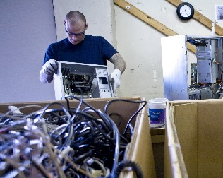

Since February 2000, we have given away over 15,700 laptops and desktops to volunteers and through our Hardware Grants Program. We hope to see you here soon.


Now hiring a Receiving & Recycling Manager
The Receiving and Recycling Manager is responsible for the efficient and effective operation of work areas that take in hardware donations for potential reuse, de-manufacture computers and other electronics that have been determined unsuitable for reuse, and dispose of separated components with local, environmentally responsible downstream recyclers.
Please see the full job description for a detailed explanation of essential responsibilities. During the initial period of settling in, the new person will focus on running the Free Geek warehouse and managing roughly 5 FTE employees. This full-time position has a starting salary of $36,000 and a comprehensive benefits package.
The position is open until filled. To apply, please send a cover letter, resume and contact information for three references to jobs(at)freegeek(dot)org.
Update your skills & resume as a volunteer intern
Free Geek is a great place to gain work experience in areas that translate well into real-world jobs while helping your community and environment. Alongside our numerous casual volunteer opportunities, we also offer a variety of unpaid internships for those 16 and older.
Our volunteer interns can expect a set schedule, the opportunity to learn valuable job skills, and letters of reference after successful completion. While there are many different opportunities available, right now we're highlighting a few key areas where we could immediately benefit from volunteer help (and benefit you, of course). These include the Tech Support, Office Support and Thrift Store/Sales internships. Find out more.
Give to Free Geek
As a 501(c)(3) nonprofit, your equipment and monetary donations to Free Geek are tax deductible. Learn more about us.
Data security
We know how important your personal information is and take the security of your data seriously. We make every effort to ensure any data-containing gizmos we receive are either wiped clean using Department of Defense standards, or physically destroyed on-site. Learn more about our data destruction process.
More than computers
We take almost everything and, for the safety of our volunteers, we have a short list of items we cannot accept: household appliances (including air conditioners), styrofoam, smoke detectors, fluorescent light bulbs, batteries, microwave ovens, dehumidifiers and copiers. Please contact us at 503-232-9350 for more details.
-
More than just used computers
Free Geek accepts computers and nearly everything that plugs into a computer or uses electricity without a fee whether or not it’s in working condition (including smart phones, tablets, e-readers, video game systems, printers, ink, and any old gadget you can think of). We DO NOT accept: Household appliances (including air conditioners), styrofoam, smoke detectors, fluorescent light bulbs, batteries, microwave ovens, dehumidifiers and copiers. We're happy to recommend locations for you to drop off those items.
Where does it go?
We try to reuse as much material as we can by giving it away through our Adoption and Hardware Grants program or selling it to support our job-training and education programs. Those items we can't reuse are handled with the highest ethical and environmental standards. Free Geek proudly participates in Oregon E-Cycles, offering free and convenient recycling of computers, monitors, televisions and more for all Oregonian households.
Drop off your gear
We're ready to accept your used and new technology from 10am-6pm Tuesday-Saturday at our convenient location at 1731 SE 10th Ave in SE Portland. Please call ahead if you have many items so we can be prepared to provide you excellent service. -
Increase your organization's impact
Your business may already have a plan in place to ethically and environmentally dispose of your e-waste, but are you currently realizing maximum impact? Because we're a 501(c)3 nonprofit, your donations of hardware are tax-deductible and we do our best to reuse as much technology as possible including free technology for volunteers, nonprofits, schools, students and community change organizations. We request tax-deductible donations to help cover the cost of processing materials and provide community services like free classes and job training, and only charge minor fees if you are a company with greater than 10 employees and donate over 7 CRT monitors/all-in-one computers at a time.
More than just used computers
Free Geek accepts computers and nearly everything that plugs into a computer or uses electricity whether or not it’s in working condition (including smart phones, tablets, e-readers, video game systems, printers, ink, and any old gadget you can think of). We DO NOT accept: Household appliances (including air conditioners), styrofoam, smoke detectors, fluorescent light bulbs, batteries, microwave ovens, dehumidifiers and copiers. We're happy to recommend locations for you to drop off those items.
Drop off your gear or let us pick it up
We're ready to accept your used and new technology from 10am-6pm Tuesday-Saturday at our convenient location at 1731 SE 10th Ave in SE Portland. Please call ahead if you have many items so we can be prepared to provide you excellent service. We're also happy to pick up materials from your location. There may be a charge for pickups; please contact us at pickups (at) freegeek (dot) org so we can create a personal quote for you.
Get a free computer
Organizations
Our Hardware Grants Program connects qualifying non-profits, schools, religious, and community change organizations with needed and available refurbished computer equipment. Since our inception in February 2000, we have granted out over 7,000 PCs, 1,700 laptops, and many other assorted items to these organizations.
We are only able to fulfill grants for organizations that can arrange to pick up granted materials at our location in Portland, OR. Please plan on spending about twenty minutes filling out our grant application and expect a response from us within two weeks.
Individuals
Free Geek receives donated used computers from the public and businesses, and Build volunteers refurbish them with care. These computers are then “adopted out” to our Adoption volunteers in exchange for 24 hours service or after successfully completing our Build Program (one free computer per year). Portland k-12 students can also earn a free computer through Plug-into-Portland.
Get a free computer by volunteering
Tech Support
Free Geek supports granted PCs and laptop hardware/software up to one year for free, with limited restrictions. Adoption volunteers must take the Getting Started class in order to receive free software tech support. Computers sold through our Thrift Store also benefit from a 6-month hardware and software warranty. Tech Support is currently open 12-5:45 Tuesday-Saturday.
About Free Geek Tech Support
Shop
Our Thrift Store caters to the novice and tinkerer alike. We sell everything from cables and cards to complete (warrantied) computer systems, cell phones, audio-visual equipment and much more, all at reasonable prices. Knowledgeable staff are happy to answer your questions and help you find the technology you need.
1731 SE 10th Avenue
Monday - Saturday 10am – 6pm
Shop online via our eBay Store
Shop online via our Amazon Store
As with any thrift store, available products constantly change. It's best to come in to see what we have or ask us through Twitter.
We apologize that we don't have a phone to distract us while we provide the best service we can to customers in our store. Visit us so we can give you the same great service!
Volunteer
All new volunteers must take a 30 minute orientation and safety tour at either 11am or 4pm Tuesday-Saturday and agree to adhere to our policies and procedures. Come on in and learn more!
- Free Geek receives donated used computers from the public and Build volunteers refurbish them with care. These computers are then “adopted out” to volunteers in exchange for 24 hours of service to our Adoption volunteers.
Volunteers in the Adoption Program
- disassemble computers for recycling
- help receive computer equipment from donors
- test basic computer components
- help keep our facility clean
- Free Geek also teaches volunteers how to refurbish and build computers. This program often takes much longer than the 24-hour Adoption Program. Those who successfully build five computers get to keep the sixth computer they build. Computers you build may go to those in the Adoption Program, local non-profits, or the thrift store.
In the Build Program, you'll learn:
- Hardware Identification - All of the components of a computer
- System Evaluation - How to test the basic functions of a computer
- Workshop - System assembly and quality control
-
Free Geek offers a variety of unpaid internships to those who have the time, interest and motivation to work outside of our main volunteer programs. We try hard to ensure your internship will provide you with learning and skills you can apply to paying jobs. Interns volunteer on a set schedule, learn valuable skills and play a vital role in the health of Free Geek as an organization.
These are competitive, challenging and highly valued positions. While we cannot pay our volunteer interns, we offer job skills training, letters of reference, and professional feedback. Find out if there's an internship that's right for you.
Everyone must be treated with respect in order for Free Geek to be a safe and comfortable environment for all volunteers and staff. If you see anyone engaging in any of the below activities on Free Geek premises, please let a staff member know immediately so we can follow up appropriately. If you are not sure of the best way to find a staff member, please ask at the front desk. The following are not acceptable behaviors at Free Geek:
- Acts or threats of violence, including intimidation, harassment, and/or coercion.
- Sexual harassment.
- Theft.
- Attitudes, judgments, jokes and language that are discriminatory or demeaning on the basis of race, class, gender, sex, age, spoken language, nationality, culture, physical appearance, sexual orientation, or ability/disability.
Opportunities for everyone
We try to offer volunteer opportunities to people of all ages and abilities. Those under 16 must be accompanied by a responsible adult at all times. We’re happy that you choose to be one of our over 3,000 essential annual volunteers!
Learn
Classes (many free)
Free Geek offers a wide range of classes free to our volunteers and the general public, unless otherwise specified. Classes range from basic introductions to computers, to starting your first website and learning how to program.
We're constantly adding new classes and looking for volunteer instructors. Please check back often to see what classes we have available.
Students should sign up in advance by visiting the volunteer desk at Free Geek or calling us at 503-232-9350.
Class schedule - PDF
This Week @ Free Geek
Want to keep up with Free Geek news, specials and events? Sign up for This Week @ Free Geek and get short weekly updates in your inbox. Your privacy is important to us; we never sell or share your personal information with anyone else.
Let's connect
How can we help?
We're local!
Free Geek
1731 SE 10th Avenue
Portland, OR 97214
(503) 232-9350
Donate/volunteer: Tue-Sat 10am to 6pm
Shop: Mon-Sat 10am to 6pm
info (at) freegeek (dot) org